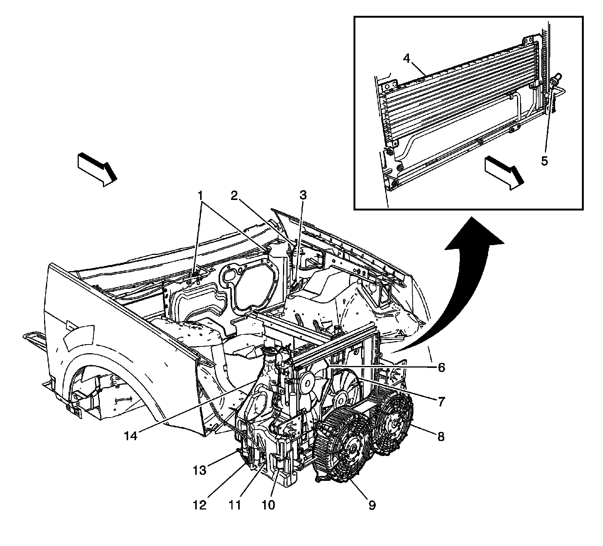
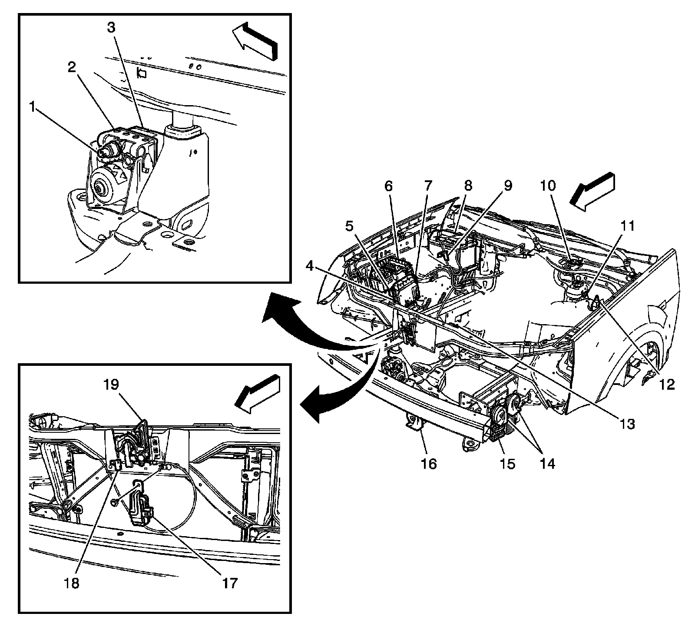
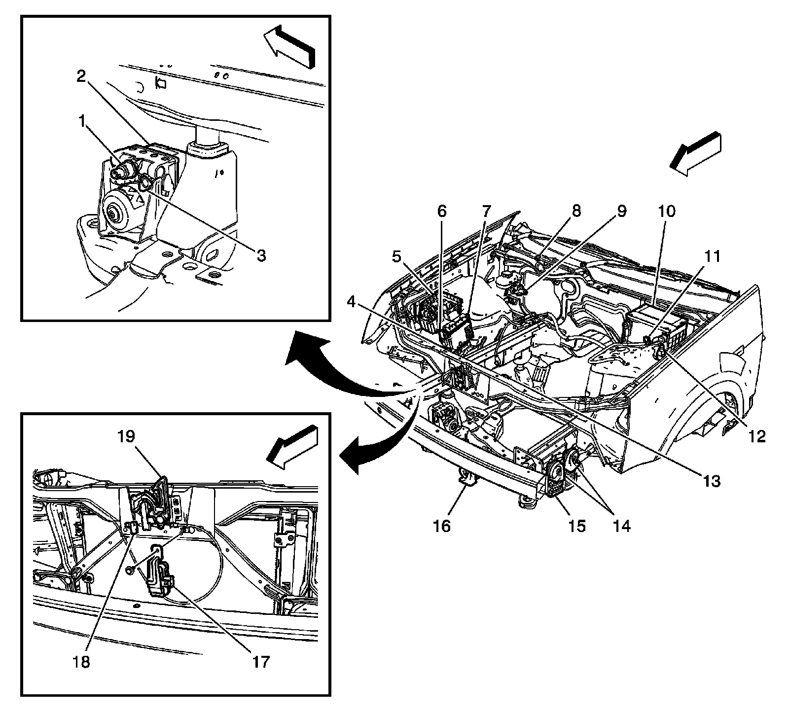

Engine Control Module: Locations
Front of Vehicle/Engine Compartment Component Views
Front Engine Compartment

1 - Heated Washer Nozzles (XA7)
2 - Coolant Surge Tank
3 - Coolant Level Switch
4 - Automatic Transmission Cooler (HD)
5 - A/C Refrigerant Pressure Sensor (LY7/LH2)
6 - Cooling Fan-Left (LY7 - Gas, 6 Cylinder, 3.6L, SFI, V6)
7 - Cooling Fan-Right (LY7 - Gas, 6 Cylinder, 3.6L, SFI, V6)
8 - Cooling Fan-Left (LH2 - Gas, 8 Cylinder, 4.6L, SFI, V8, DOHC, HO)
9 - Cooling Fan-Right (LH2 - Gas, 8 Cylinder, 4.6L, SFI, V8, DOHC, HO)
10 - Rear Window Washer Fluid Pump
11 - Windshield Washer Fluid Pump
12 - Washer Fluid Level Switch
13 - Headlamp Washer Fluid Pump (CE4)
14 - Washer Solvent Container
Front Engine Compartment - RHD

1 - Rear Window Washer Fluid Pump
2 - Windshield Washer Fluid Pump
3 - Washer Fluid Level Switch
4 - Headlamp Washer Fluid Pump (CE4)
5 - Washer Solvent Container
6 - Cooling Fan - Right (LY7 - Gas, 6 Cylinder, 3.6L, SFI, V6)
7 - Cooling Fan - Left (LY7 - Gas, 6 Cylinder, 3.6L, SFI, V6)
8 - Cooling Fan - Left (LH2 - Gas, 8 Cylinder, 4.6L, SFI, V8, DOHC, HO)
9 - Cooling Fan - Right (LH2 - Gas, 8 Cylinder, 4.6L, SFI, V8, DOHC, HO)
10 - Coolant Surge Tank (RHD)
11 - Coolant Level Switch (RHD)
12 - A/C Refrigerant Pressure Sensor (LY7/LH2)
Front Engine Compartment - LHD

1 - Brake Fluid Pressure Sensor
2 - Electronic Brake Control Module (EBCM)
3 - Brake Pressure Modulator Valve (BPMV)
4 - Inflatable Restraint Front End Sensor - Right
5 - Transmission Control Module (LY7 - Gas, 6 Cylinder, 3.6L, SFI, V6)
6 - Fuse Block-Underhood
7 - Engine Control Module (ECM)
8 - Battery
9 - Battery Current Sensor
10 - Windshield Wiper Motor
11 - Brake Fluid Level Switch
12 - Hood Ajar Switch (UA6)
13 - Inflatable Restraint Front End Sensor - Left
14 - Horns
15 - Engine Control Module (ECM) (LH2 - Gas, 8 Cylinder, 4.6L, SFI, V8, DOHC, HO)
16 - Horn - Center (UO3)
17 - Air Quality Sensor (AQS) (K14)
18 - Ambient Air Temperature Sensor
19 - Hood Latch Assembly
Front Engine Compartment - RHD

1 - Brake Fluid Pressure Sensor
2 - Electronic Brake Control Module (EBCM)
3 - Brake Pressure Modulator Valve (BPMV)
4 - Inflatable Restraint Front End Sensor - Right
5 - Fuse Block-Underhood
6 - Transmission Control Module (LY7 - Gas, 6 Cylinder, 3.6L, SFI, V6)
7 - Engine Control Module (ECM)
8 - Battery
9 - Battery Current Sensor
10 - Windshield Wiper Motor
11 - Brake Fluid Level Switch
12 - Hood Ajar Switch (UA6)
13 - Inflatable Restraint Front End Sensor - Left
14 - Horns
15 - Engine Control Module (ECM) (LH2 - Gas, 8 Cylinder, 4.6L, SFI, V8, DOHC, HO)
16 - Horn - Center (UO3)
17 - Air Quality Sensor (AQS) (K14)
18 - Ambient Air Temperature Sensor
19 - Hood Latch Assembly